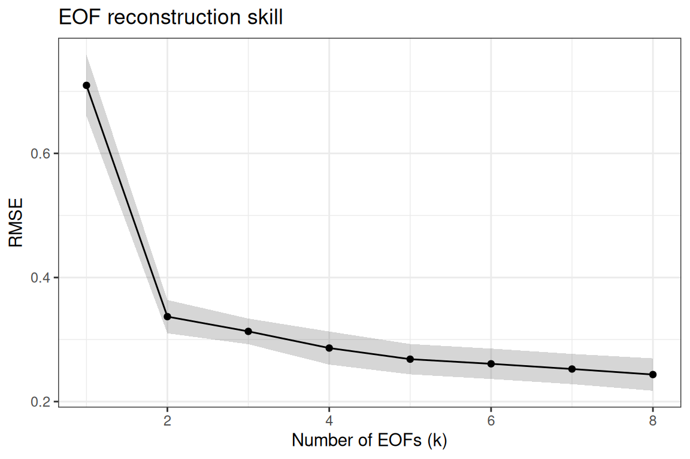
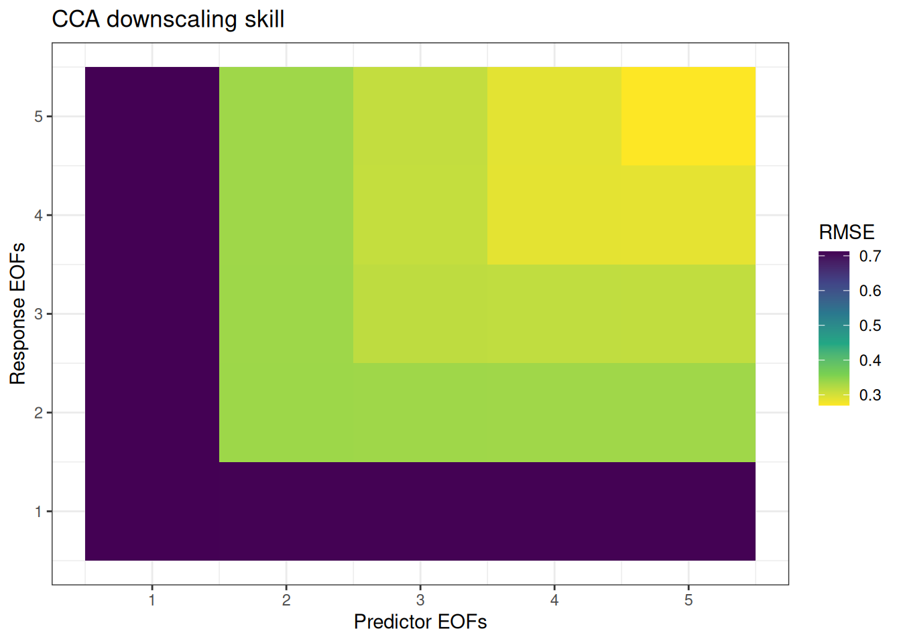

Overview
EOF and CCA analyses require choosing how many modes to retain (k). Too few modes discard useful signal; too many introduce noise. tidyeof provides two cross-validation functions for data-driven mode selection:
-
tune_eof()– optimize EOF truncation for field reconstruction -
tune_cca()– jointly optimize predictor EOFs, response EOFs, and CCA modes for downscaling
Both use temporal cross-validation: the time series is split into folds, patterns are estimated on training folds, and reconstruction or prediction skill is evaluated on held-out folds.
Setup
fine <- system.file("testdata/prism_test.RDS", package = "tidyeof") |>
readRDS()
coarse <- fine |>
st_warp(cellsize = 0.2, method = "average", use_gdal = TRUE, no_data_value = -99999) |>
setNames(names(fine)) |>
st_set_dimensions("band",
values = st_get_dimension_values(fine, "time"),
names = "time")Tuning EOF truncation
tune_eof() evaluates reconstruction skill across a range of k values. For each held-out fold it uses a speckled holdout: a random scatter of grid cells is hidden, the mode amplitudes are estimated from the visible cells only, and the hidden cells are then predicted. Because the hidden cells play no part in estimating the amplitudes, the prediction is genuinely out-of-sample, and skill stops improving once k exceeds the number of modes the data actually support. This is what lets the RMSE curve have a true minimum.
(Simply projecting the whole held-out field onto the EOFs would not work: the projection is least-squares optimal for the very data being scored, so error would fall monotonically with k and the “best” k would always be the largest. hidden_fraction and n_reps control the size and number of the random masks.)
eof_results <- tune_eof(fine, k = 1:8, kfolds = 3)ℹ Computing patterns for 3 folds✔ Computing patterns for 3 folds [446ms]Evaluating 8 k values across 3 folds
■■■■■■■■■■■■■■■■ 50% | ETA: 1s
eof_results# A tibble: 24 × 5
k fold rmse cor_spatial cor_temporal
<int> <int> <dbl> <dbl> <dbl>
1 1 1 0.809 0.230 0.998
2 1 2 0.657 0.145 0.998
3 1 3 0.663 0.282 0.998
4 2 1 0.391 0.741 0.999
5 2 2 0.310 0.829 0.999
6 2 3 0.310 0.791 1.000
7 3 1 0.354 0.833 1.000
8 3 2 0.290 0.853 1.000
9 3 3 0.295 0.824 1.000
10 4 1 0.338 0.847 1.000
# ℹ 14 more rowsThree metrics are computed by default, all on the hidden cells:
- RMSE – root mean square error (lower is better)
- cor_spatial – mean spatial anomaly correlation per time step, i.e. computed after removing each cell’s temporal mean so it reflects pattern skill rather than the static climatology (higher is better)
- cor_temporal – mean temporal correlation per grid cell (higher is better)
Summarize across folds to find the optimal k:
eof_summary <- summarize_eof_cv(eof_results, metric = "rmse")
eof_summary# A tibble: 8 × 8
k rmse_mean rmse_sd cor_spatial_mean cor_spatial_sd cor_temporal_mean
<int> <dbl> <dbl> <dbl> <dbl> <dbl>
1 8 0.244 0.0452 0.910 0.0120 1.000
2 7 0.252 0.0422 0.902 0.0167 1.000
3 6 0.261 0.0425 0.894 0.0196 1.000
4 5 0.268 0.0423 0.887 0.0205 1.000
5 4 0.286 0.0462 0.864 0.0269 1.000
6 3 0.313 0.0358 0.837 0.0150 1.000
7 2 0.337 0.0466 0.787 0.0440 0.999
8 1 0.710 0.0859 0.219 0.0691 0.998
# ℹ 2 more variables: cor_temporal_sd <dbl>, n_folds <int>
eof_results |>
group_by(k) |>
summarize(
rmse_mean = mean(rmse),
rmse_se = sd(rmse) / sqrt(n()),
.groups = "drop"
) |>
ggplot(aes(k, rmse_mean)) +
geom_ribbon(aes(ymin = rmse_mean - rmse_se, ymax = rmse_mean + rmse_se), alpha = 0.2) +
geom_line() +
geom_point() +
labs(x = "Number of EOFs (k)", y = "RMSE", title = "EOF reconstruction skill") +
theme_bw()
Tuning CCA downscaling
tune_cca() jointly searches over three dimensions:
-
k_pred– number of predictor EOFs -
k_resp– number of response EOFs -
k_cca– number of CCA modes (optional; defaults tomin(k_pred, k_resp))
Preparing folds
First, prepare cross-validation folds using prep_cv_folds(). This pre-computes EOF patterns at the maximum requested k for each fold, so the grid search over truncation is fast (it just subsets the pre-computed patterns).
cv_folds <- prep_cv_folds(
coarse, fine,
kfolds = 3,
max_k_pred = 5,
max_k_resp = 5,
weight = TRUE
)ℹ Computing patterns for 3 folds✔ Computing patterns for 3 folds [421ms]
cv_folds── Cross-Validation Folds ──────────────────────────────────────────────────────Folds: 3Common time steps: 36Max predictor EOFs: 5Max response EOFs: 5── Pattern Options ──Scale (predictor): FALSEScale (response): FALSERotate: FALSEMonthly: FALSEWeight: TRUEGrid search
cca_results <- tune_cca(
cv_folds,
k_pred = 1:5,
k_resp = 1:5
)Evaluating 25 parameter combinations across 3 folds
■■■■■■■■■■■■■■■■■■ 56% | ETA: 3s
cca_results# A tibble: 75 × 7
k_pred k_resp k_cca fold rmse cor_spatial cor_temporal
<int> <int> <int> <int> <dbl> <dbl> <dbl>
1 1 1 1 1 0.808 0.240 0.998
2 1 1 1 2 0.658 0.140 0.998
3 1 1 1 3 0.671 0.281 0.997
4 1 2 1 1 0.808 0.238 0.998
5 1 2 1 2 0.657 0.141 0.998
6 1 2 1 3 0.671 0.281 0.997
7 1 3 1 1 0.808 0.238 0.998
8 1 3 1 2 0.657 0.141 0.998
9 1 3 1 3 0.671 0.281 0.997
10 1 4 1 1 0.808 0.238 0.998
# ℹ 65 more rowsSummarize to find the best parameter combination:
cca_summary <- summarize_cv(cca_results, metric = "rmse")
head(cca_summary)# A tibble: 6 × 10
k_pred k_resp k_cca rmse_mean rmse_sd cor_spatial_mean cor_spatial_sd
<int> <int> <int> <dbl> <dbl> <dbl> <dbl>
1 5 5 5 0.270 0.0416 0.885 0.0196
2 5 4 4 0.287 0.0459 0.864 0.0247
3 4 4 4 0.288 0.0453 0.862 0.0255
4 4 5 4 0.289 0.0471 0.860 0.0273
5 3 4 3 0.311 0.0387 0.838 0.00797
6 3 5 3 0.312 0.0395 0.836 0.00950
# ℹ 3 more variables: cor_temporal_mean <dbl>, cor_temporal_sd <dbl>,
# n_folds <int>
cca_results |>
group_by(k_pred, k_resp) |>
summarize(rmse = mean(rmse), .groups = "drop") |>
ggplot(aes(k_pred, k_resp, fill = rmse)) +
geom_tile() +
scale_fill_viridis_c(direction = -1) +
labs(x = "Predictor EOFs", y = "Response EOFs", fill = "RMSE",
title = "CCA downscaling skill") +
theme_bw()
Tuning k_cca separately
Using fewer CCA modes than min(k_pred, k_resp) acts as additional regularization. To search over k_cca explicitly:
cca_results_3d <- tune_cca(
cv_folds,
k_pred = 2:4,
k_resp = 2:4,
k_cca = 1:3
)Evaluating 22 parameter combinations across 3 folds
■■■■■■■■■■■■■■■ 45% | ETA: 3s
■■■■■■■■■■■■■■■■■■■■■■■■■■■■■■ 95% | ETA: 0s
cca_results_3d |>
group_by(k_pred, k_resp, k_cca) |>
summarize(rmse = mean(rmse), .groups = "drop") |>
arrange(rmse) |>
head(10)# A tibble: 10 × 4
k_pred k_resp k_cca rmse
<int> <int> <int> <dbl>
1 3 4 3 0.311
2 4 3 3 0.314
3 3 3 3 0.316
4 4 4 3 0.318
5 4 2 2 0.336
6 3 2 2 0.336
7 2 4 2 0.337
8 2 3 2 0.337
9 2 2 2 0.337
10 4 4 2 0.337Fold construction
prep_folds() creates balanced temporal folds for cross-validation. It assigns contiguous blocks of time steps to folds (not random sampling), which is appropriate for autocorrelated time series.
times <- st_get_dimension_values(fine, "time")
folds <- prep_folds(times, kfolds = 5)
# Each fold is a vector of held-out times
lengths(folds)[1] 8 7 7 7 7Parallel execution
For large grids or many parameter combinations, tune_cca() supports parallel execution via furrr:
Best practices
-
Start coarse, then refine. Begin with a wide search (e.g.,
k_pred = 1:10) with few folds, then narrow the range with more folds. - Use 3-5 folds. With short time series (< 50 time steps), 3 folds preserves enough training data. With longer series, 5 folds gives more stable estimates.
-
Rotation and CV don’t mix. Varimax rotation makes modes non-orthogonal, so subsetting
pat[1:k]no longer gives the best rank-k approximation. The CV functions requirerotate = FALSEand will error if rotation was applied. -
Inspect multiple metrics. RMSE penalizes large errors; spatial correlation rewards pattern fidelity; temporal correlation rewards consistent bias. The best
kmay differ across metrics – choose based on your application.